O Palácio Que Todo Gato Merece
Suítes exclusivas, atendimento premium e conforto digno da realeza felina.
Nossos Quartos

Imperial Whiskers Suite
Uma suíte criada para hóspedes felinos que exigem conforto, exclusividade e sofisticação. Com decoração elegante em azul marinho e dourado, a Imperial Whiskers Suite oferece camas premium, iluminação aconchegante, área de relaxamento privativa e atendimento VIP 24 horas. Um espaço luxuoso pensado para proporcionar uma experiência digna da realeza felina.
R$ 10.800.000Mais detalhes
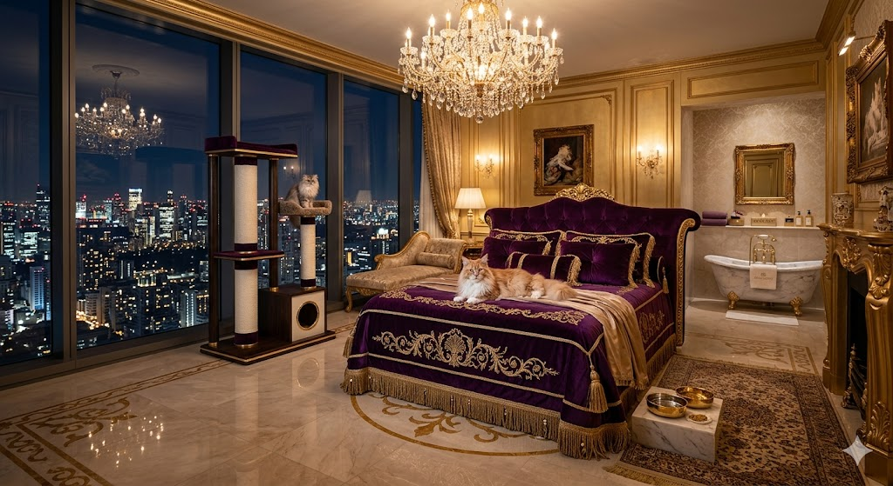
Golden Paw Suite
Uma suíte elegante e aconchegante para gatos sofisticados que desejam conforto premium sem abrir mão do luxo. O Golden Paw Suite conta com camas macias, iluminação suave, brinquedos exclusivos e uma decoração refinada em roxo e dourado. Ideal para hóspedes que procuram uma experiência relaxante e inesquecível no The Aristocats Palace.
R$ 8.300.000Mais detalhes

Silver Moon Room
Um quarto confortável e elegante, perfeito para hóspedes felinos que desejam relaxar com estilo. O Silver Moon Room oferece camas macias, iluminação suave e um ambiente acolhedor com detalhes sofisticados em azul marinho e dourado. Ideal para proporcionar descanso e diversão em uma experiência premium.
R$ 2.000.000Mais detalhes

Velvet Paws Room
Uma acomodação charmosa e sofisticada para gatos que apreciam conforto e tranquilidade. O Velvet Paws Room conta com brinquedos exclusivos, área de descanso aconchegante e decoração moderna inspirada no luxo felino. Um espaço perfeito para hóspedes que desejam aproveitar o melhor do The Aristocats Palace.
R$ 2.000.000Mais detalhes
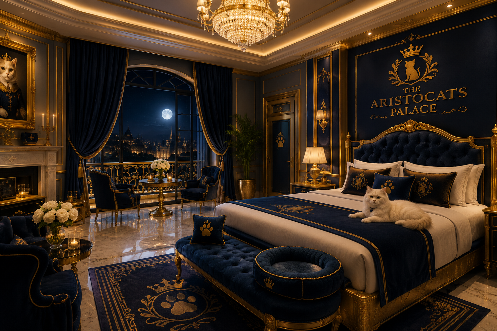
Sapphire Crown Suite
Uma suíte inspirada na elegância dos palácios europeus, projetada para hóspedes que buscam uma experiência exclusiva de conforto e sofisticação. Com acabamentos em azul safira e dourado, a Sapphire Crown Suite oferece uma ampla área de descanso, vista privilegiada para os jardins do hotel, cama premium felina e serviço personalizado. Um ambiente refinado onde luxo e tranquilidade se encontram para proporcionar uma estadia verdadeiramente inesquecível.
R$ 6.500.000Mais detalhes
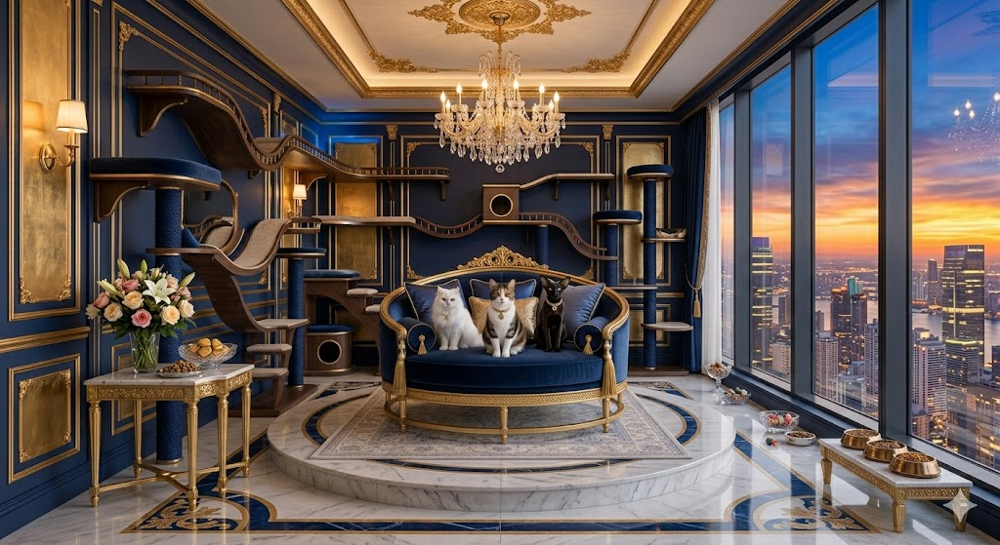
Diamond Skyline Suite
Uma suíte exclusiva localizada na área mais nobre do The Aristocats Palace. A Diamond Skyline Suite combina sofisticação e conforto em um ambiente inspirado nos grandes hotéis de luxo do mundo. Com amplas janelas panorâmicas, decoração em azul-marinho e dourado, área de descanso privativa, móveis premium e espaços projetados especialmente para o bem-estar felino, esta suíte oferece uma experiência incomparável para hóspedes que desejam viver o máximo do luxo aristocrático.
R$ 4.500.000Mais detalhes
Nossos Serviços

Jardim Imperial
Um espaço ao ar livre criado para proporcionar tranquilidade e diversão aos hóspedes felinos. O Jardim Imperial conta com fontes elegantes, caminhos iluminados, áreas de descanso sofisticadas e uma paisagem inspirada nos palácios mais luxuosos do mundo. Um ambiente perfeito para momentos de relaxamento e exploração.
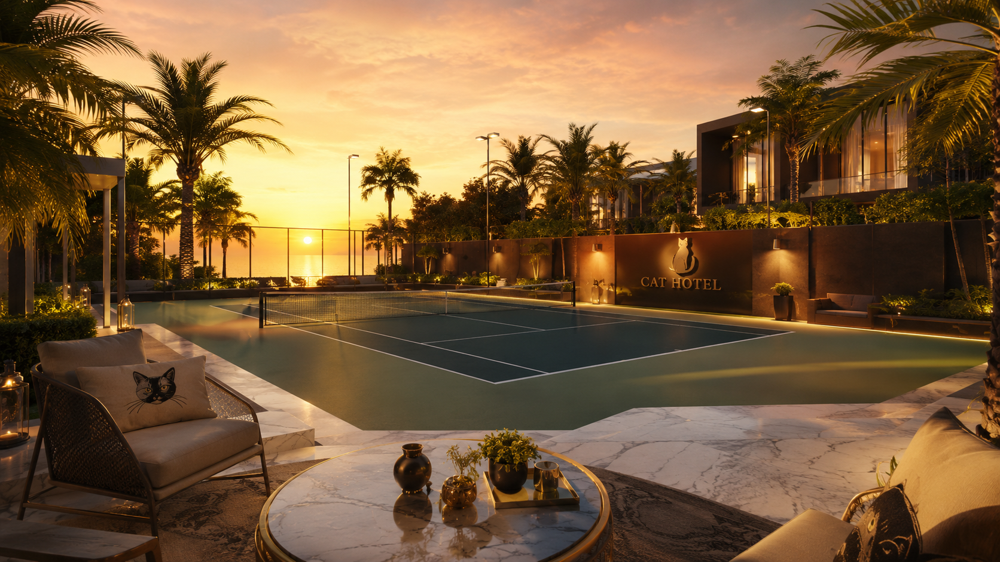
Imperial Tennis Club
Uma quadra exclusiva inspirada nos resorts mais luxuosos do mundo. O Imperial Tennis Club oferece um espaço sofisticado para atividades recreativas felinas, com decoração elegante, iluminação refinada e áreas VIP para hóspedes que apreciam experiências esportivas de alto nível.

Golden Whiskers
O restaurante mais sofisticado do The Aristocats Palace. O Golden Whiskers oferece um menu gourmet exclusivo, preparado por chefs especializados em culinária felina premium. Um ambiente elegante e aconchegante, perfeito para proporcionar experiências gastronômicas inesquecíveis aos hóspedes mais luxuosos do mundo.

Royal Paws
Um salão luxuoso dedicado à estética e aos cuidados felinos. O Royal Paws oferece hidratação premium, escovação especializada, banho aromático e tratamentos exclusivos para deixar cada hóspede ainda mais elegante e sofisticado.
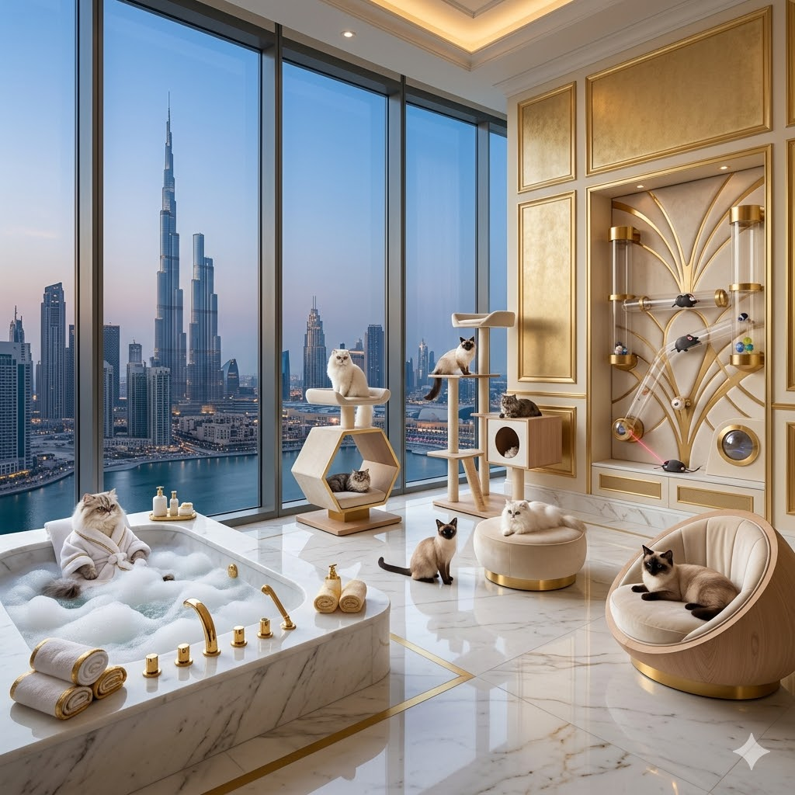
Spa Felino Premium
O Spa Felino Premium oferece uma experiência exclusiva de bem-estar e relaxamento. Com massagens especiais, aromaterapia, banhos sofisticados e áreas aconchegantes, o espaço foi desenvolvido para garantir conforto absoluto aos gatos mais exigentes do The Aristocats Palace.

Sala Elite Lounge
Um ambiente moderno e divertido criado especialmente para entretenimento felino. A Elite Lounge possui brinquedos interativos, áreas de escalada, espaços aconchegantes para descanso e atividades desenvolvidas para estimular diversão e conforto em uma experiência premium.
Avaliações
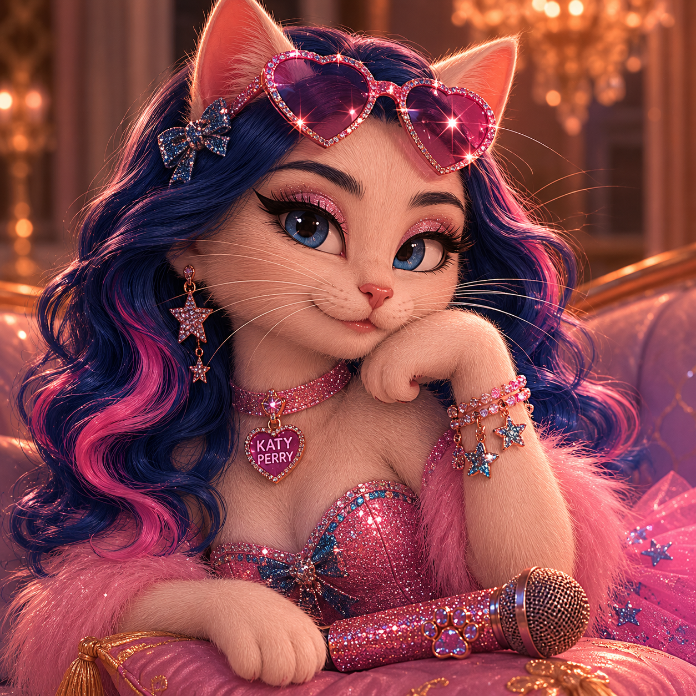
Kitty Perry
As suítes são simplesmente perfeitas. A decoração azul e dourada é um verdadeiro sonho felino.
⭐⭐⭐⭐⭐⭐⭐
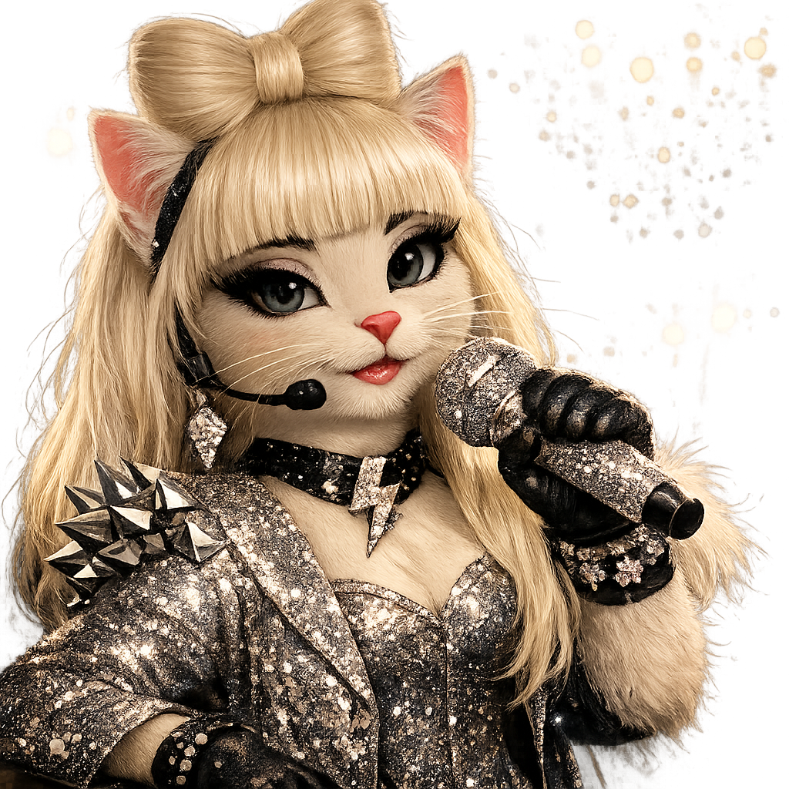
Lady Cat
Já visitei hotéis incríveis ao redor do mundo, mas nada se compara ao The Aristocats Palace. O ambiente é glamouroso, confortável e extremamente refinado. O salão de beleza felino merece destaque. Uma experiência digna de estrelas internacionais.
⭐⭐⭐⭐⭐⭐⭐
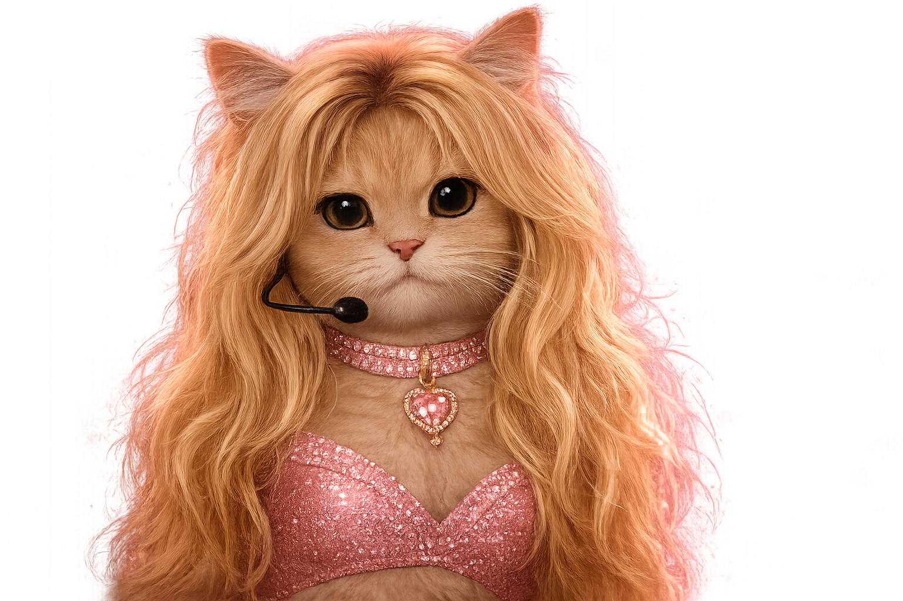
Meow Spears
O The Aristocats Palace superou todas as minhas expectativas. As suítes são extremamente luxuosas, o atendimento é impecável e o spa felino é simplesmente maravilhoso. Definitivamente o hotel mais sofisticado que já visitei.
⭐⭐⭐⭐⭐⭐⭐
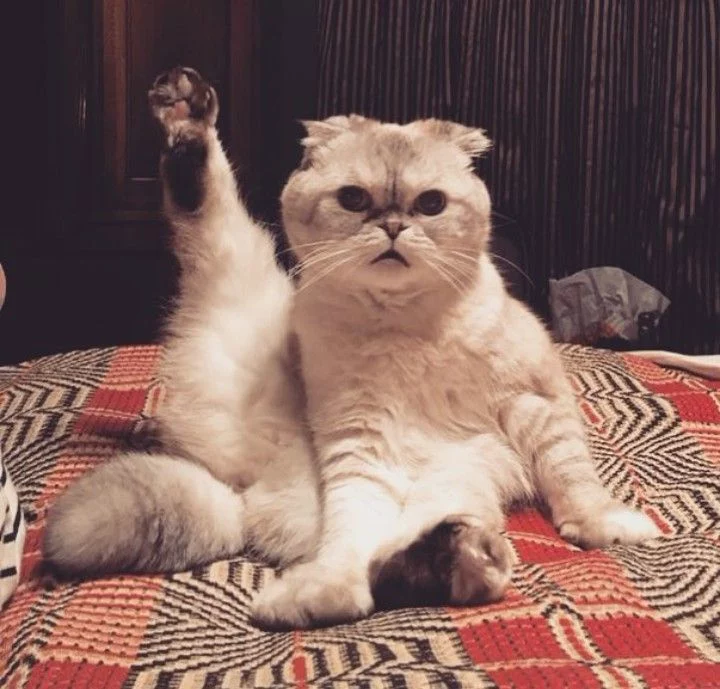
Olivia Benson
“Miau.” — traduzido como: "A melhor hospedagem felina do mundo."
⭐⭐⭐⭐⭐⭐⭐
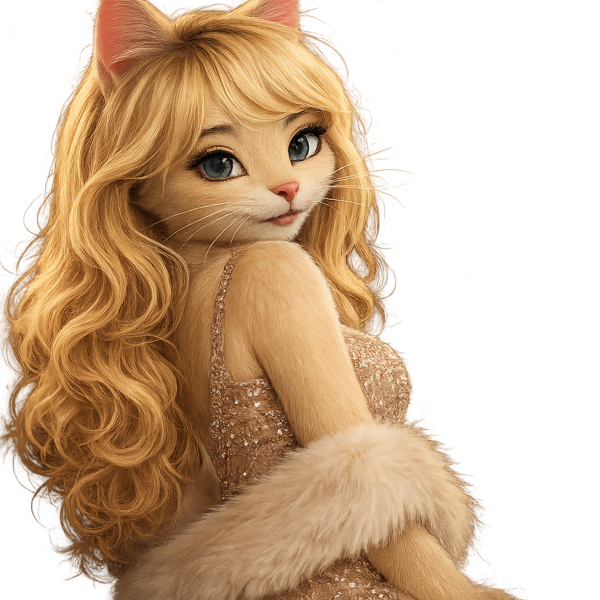
Sabrina Meowpenter
Me apaixonei completamente pelo hotel. O ambiente é aconchegante, sofisticado e cheio de personalidade. A equipe é muito atenciosa e cada espaço foi pensado para oferecer conforto absoluto aos hóspedes felinos.
⭐⭐⭐⭐⭐⭐⭐
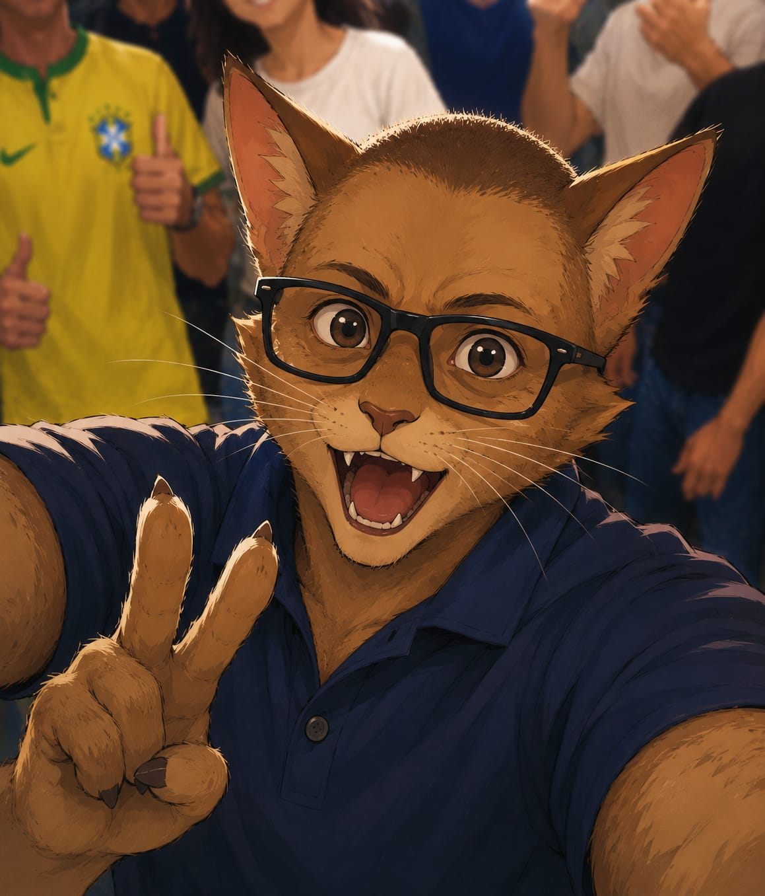
Sir Miauzinho
Além de extremamente elegante, o sistema do hotel é incrivelmente organizado e moderno. Tudo funciona perfeitamente, desde as reservas até os serviços VIP. Um verdadeiro exemplo de excelência tecnológica felina.
⭐⭐⭐⭐⭐⭐⭐
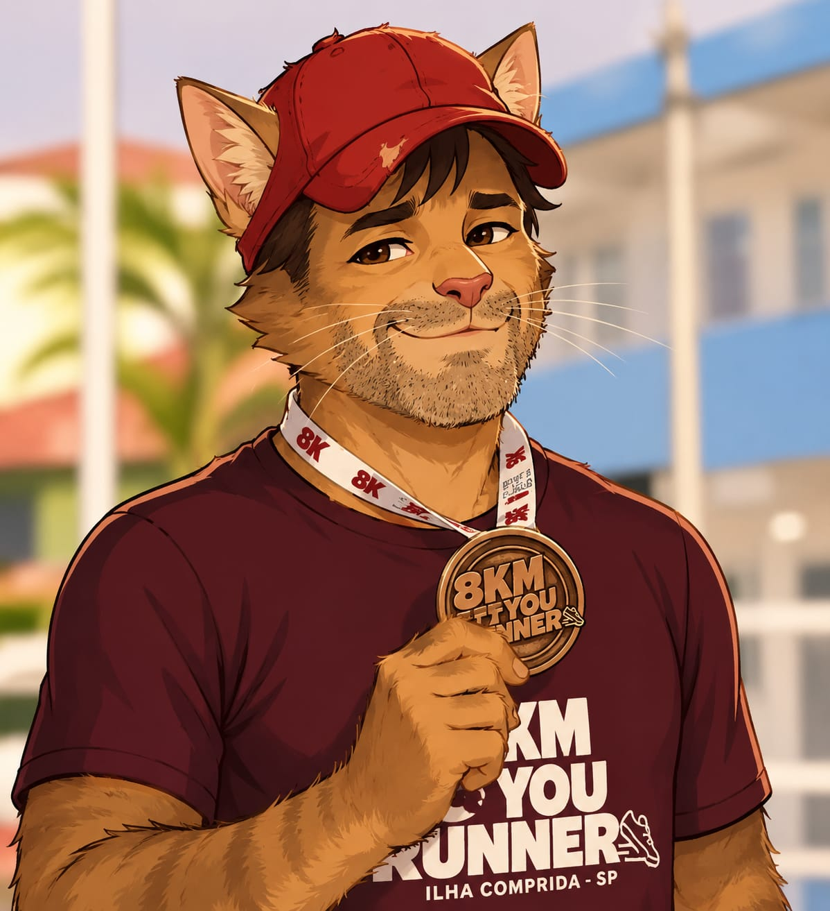
Sir Ramiau
O nível de sofisticação do The Aristocats Palace é absurdo. Dá pra perceber o cuidado em cada detalhe do projeto. A experiência inteira parece ter sido programada para alcançar perfeição absoluta.
⭐⭐⭐⭐⭐⭐⭐
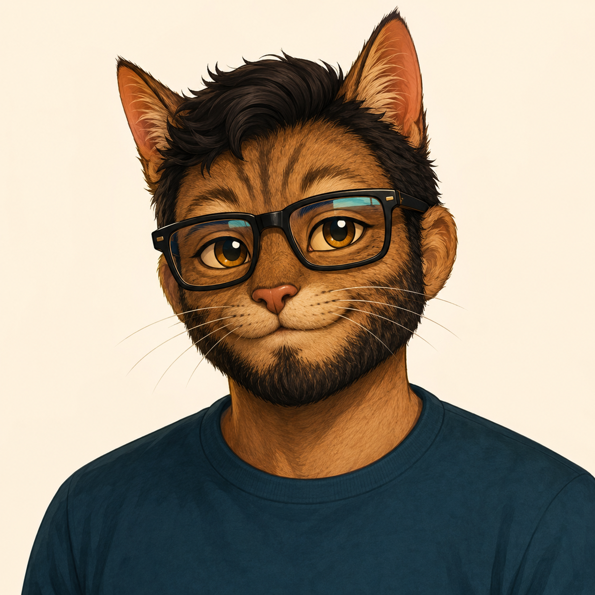
Sir Igato
A infraestrutura do hotel é impecável. Tudo é extremamente bem planejado, organizado e eficiente. Até o banco de dados dos hóspedes parece luxuoso. Sem dúvidas, o hotel felino mais impressionante do mundo.
⭐⭐⭐⭐⭐⭐⭐
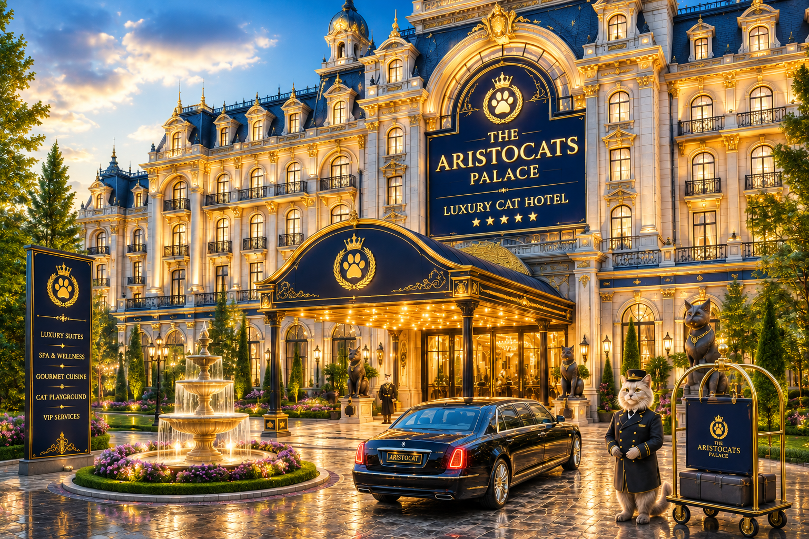
The Aristocats Palace
O The Aristocats Palace é um hotel de luxo especializado na hospedagem e bem-estar felino. Inspirado na elegância da realeza e no conforto dos melhores resorts do mundo, nosso objetivo é proporcionar uma experiência exclusiva para gatos que merecem o máximo de cuidado, carinho e sofisticação. Com suítes premium, áreas de lazer, spa, restaurante gourmet, salão de beleza e atendimento personalizado, oferecemos um ambiente seguro, confortável e inesquecível para cada hóspede. No The Aristocats Palace, cada gato é tratado como um verdadeiro aristocrata.
- Suítes de luxo
- Restaurante gourmet felino
- Spa e centro de bem-estar
- Áreas de lazer exclusivas
- Segurança e monitoramento 24 horas
- Equipe especializada em cuidados felinos
- Hotel certificado com 7 estrelas felinas
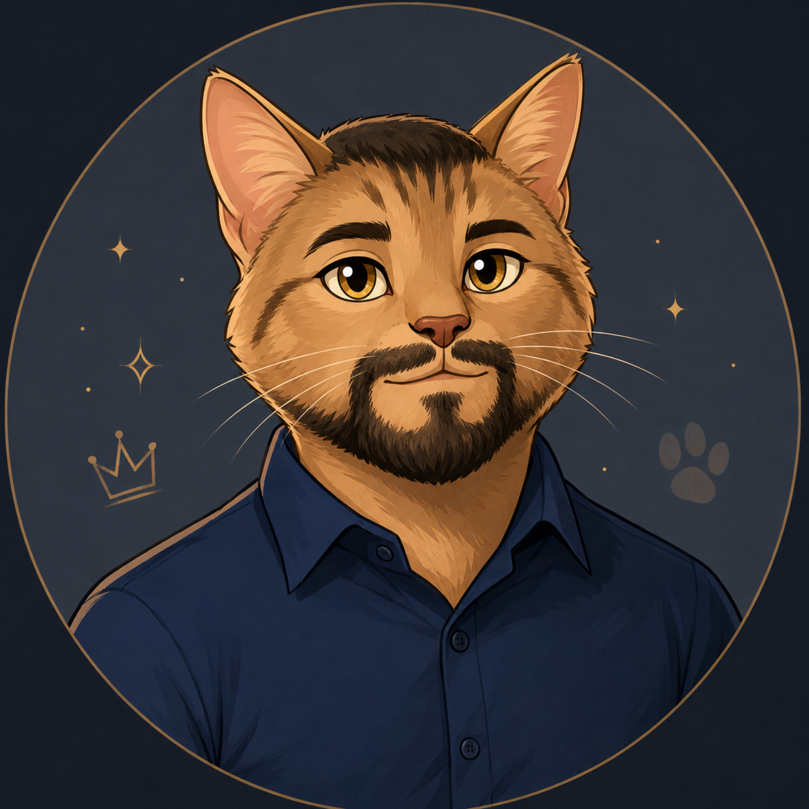
Diego Whiskers Max
Diego Whiskers Max é o fundador e diretor executivo do The Aristocats Palace. Apaixonado pelo bem-estar felino e pela excelência em hospedagem, criou o hotel com a missão de oferecer uma experiência única, onde luxo, conforto e diversão se unem para proporcionar o melhor aos hóspedes. Sua visão inovadora transformou o The Aristocats Palace em uma referência mundial em hotelaria felina de alto padrão.
"Todo gato merece viver como a realeza." — Diego Whiskers Max